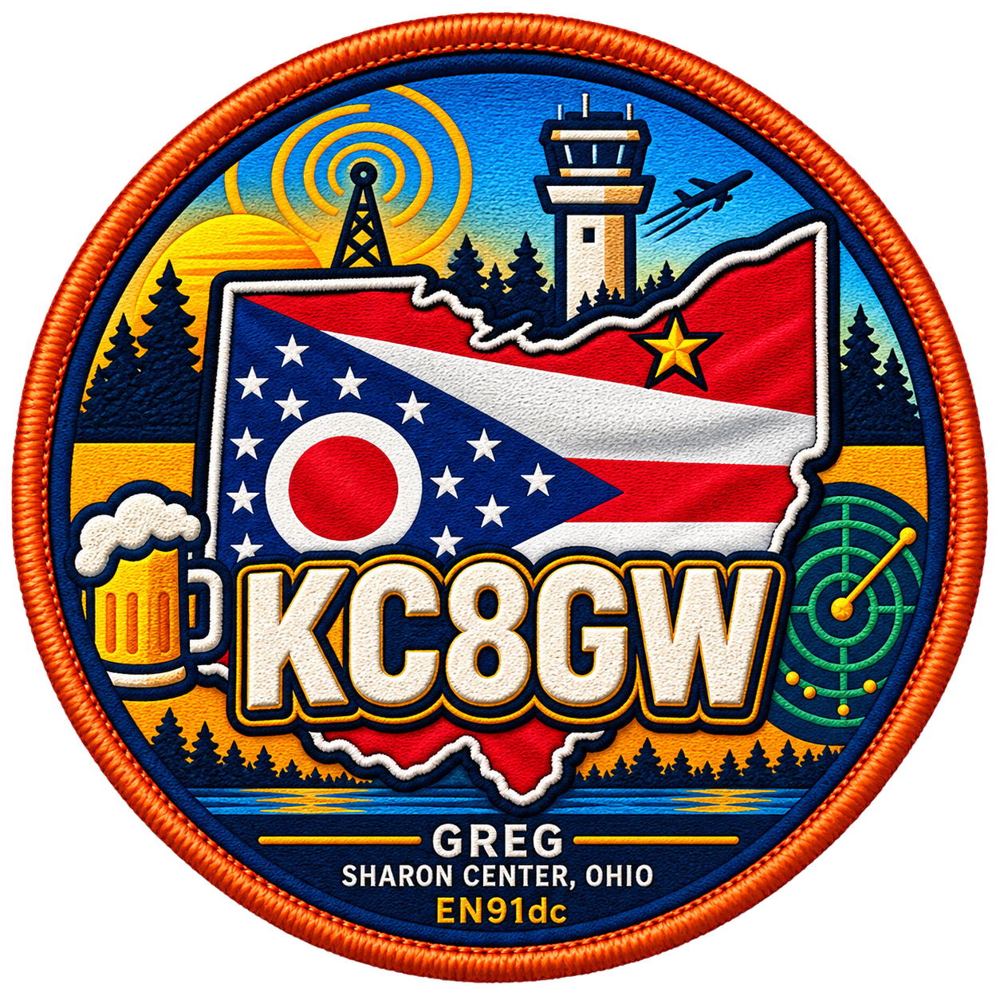

SPACE WEATHER
DETAILS →Solar Conditions
Kp Index—Geomagnetic
Solar Flux—F10.7
Radio Blackout—NOAA R Scale
Geomagnetic—NOAA G Scale
Loading NOAA space-weather data…

AMATEUR EXTRA · GMRS WSGZ373
COMMUNICATE · FLY · EXPLORE
NORTHEAST OHIO
A personal operations center for amateur radio, ADS-B aircraft tracking, aviation, GMRS, SDR and Raspberry Pi projects.
LIVE INSTRUMENTS
Current public data and direct links to the tools used around the KC8GW station.
Loading NOAA space-weather data…
Loading estimated conditions…
Ratings are estimates based on current Kp and F10.7 values. Actual propagation varies by time, path, antenna and local noise.
EXPLORE
Official LiveATC links for Cleveland-area aviation audio.
KC8GW station profile, license information and QRZ resources.
Receiver links, aircraft tracking and feeder access information.
Raspberry Pi, SDR, web, electronics and 3D-printing projects.
Station, aircraft, radio and project photos and videos.
FREQUENTLY USED